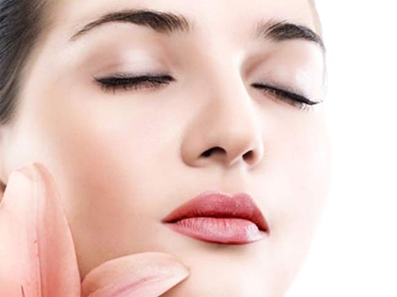
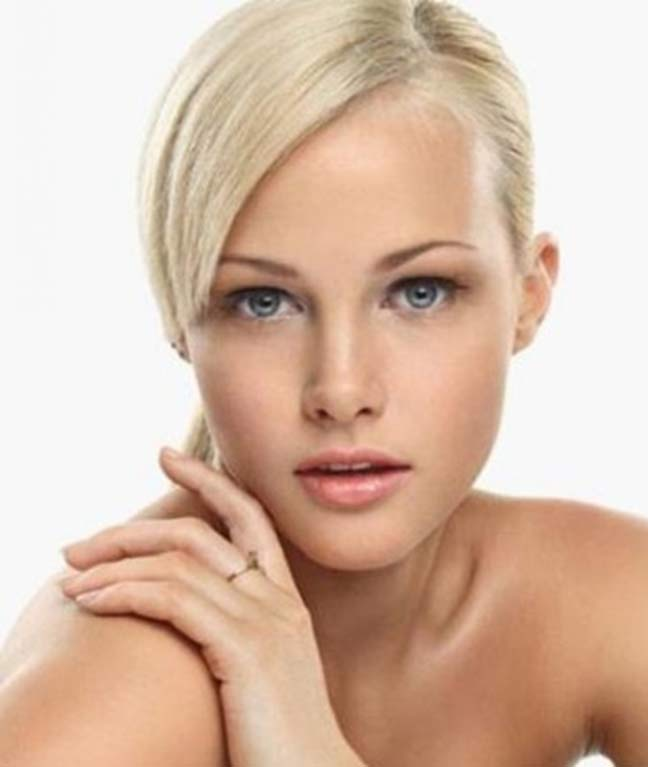
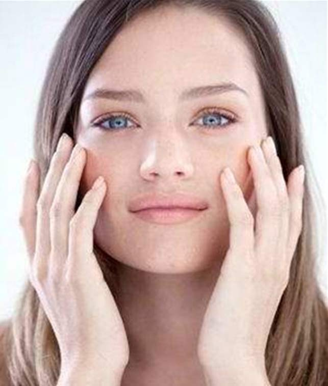
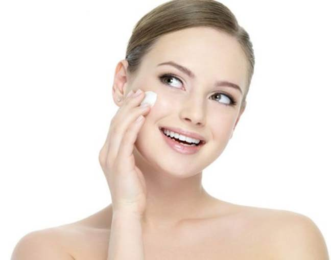

“冰肌玉骨、肤若凝脂、吹弹可破……”自古以来，白皙的肌肤一直是所有亚洲女性恒久不变的追求。一白遮三丑，白皙的肌肤，即使不化妆也很美丽。想要用透白胜雪、细白如瓷的肌肤来迎接每一天的阳光吗？先来做个小测试吧，看看你属于美白哪一派？

面部测试
| 1. |
是否全年使用防晒产品？ （是2；否3） |
| 2. |
是否全套使用美白产品？ （是4；否5） |
| 3. |
是否常年在室外工作？ （是4；否7） |
| 4. |
是否脸上从小就有雀斑？ （是5；否6） |
| 5. |
是否坚持每周使用面膜？ （是8；否7） |
| 6. |
是否每天坚持喝足8杯水？ （是10；否8） |
| 7. |
是否总是觉得自己素颜的肤色很难搭配颜色鲜艳的衣物？ （是8；否9） |
| 8. |
是否现发现颧骨上的斑点越来越深了，粉底也很难遮盖？ （是B；否10） |
| 9. |
是否觉得自己的皮肤在阳光曝晒后很容易发红？ （是C；否8） |
| 10. |
是否发现一天工作结束的时候，脸色看起来很憔悴无精打采？ （是A；否D） |
知道自己属于美白哪一派了吗？是不是都很想成为“白雪公主”呢？那么接下来就看看每一派的独家美白秘籍吧：
A. “暗黄派”美白秘籍

肌肤之所以暗黄是因为细胞氧化、角质代谢不良及环境污染等产生的大量自由基促使黑色素加倍生成。想要美美的白皙肌肤，可在每一步的护肤中都可使用相应的美白产品，让效果达到最大化哦！ 如使用舒颜系列的护肤产品来调理肌肤状态和肌底，再使用美白产品，就能达到你梦寐以求额白皙肌肤。另外，由于紫外线会加速黑色素的形成，因此防晒工作也不能马虎。
B. “斑点派”美白秘籍
色斑是亚洲女性最大的皮肤问题，如何才能让肌肤如同细瓷一般无瑕呢？玫琳凯美白焦点淡斑精华露特别针对有肤色暗沉不均的人所设计，用特制的滚珠棒子轻轻按压在肤色暗沉不均部位，让内含的浓缩植物美白精华，能够完整的到达肌肤底层。大家都知道护肤步骤中的精华护理是很重要的，因为高浓度的精华成分能很好的被肌肤吸收，达到最理想化的护肤效果。玫琳凯美白精华液富含高浓度的MelaCEP®美白复合物能提亮肤色、促进细胞代谢和抗氧化，瞬间吸收的质地能帮助你明亮肤色，使肌肤回复清透。
C .“泛红派”美白秘籍

对于“泛红派”的你来说，首要工作就是舒缓肌肤，改善肌肤的亚健康状况。建议：每周定期使用1-2次舒颜面膜，把舒颜精华露作为所有护肤功课的打底步骤，出现肌肤不适及时用舒颜爽肤水敷面舒缓。
D. “无瑕派”美白秘籍

想要白玉一样无瑕通透的肌肤建议每周2-3次的美白润泽面膜护理就很有效哦，有效帮助对抗肌肤氧化，抵抗导致肌肤肤色不均和失去活力的各种因素，更深层的均匀肤色和密集滋养肌肤，轻松成就肌肤的白皙无瑕和年轻清透。